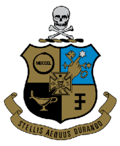

Phi Kappa Sigma ΦKΣ
You've made it this far? That means a lot to me :)
I guess that means that I can tell you a little bit about my Fraternity...
As of Saturday, February 10, 2018, I am officially a brother of Phi Kappa Sigma, Alpha Delta Chapter
Over the course of the Fall 2017 semester, I was a pledge grinding and balancing between school and Fraternity

Image Source: https://upload.wikimedia.org/wikipedia/en/thumb/8/8e/Phi-kappa-sigma-crest.png/200px-Phi-kappa-sigma-crest.png
A little info about the Fraternity is that at University of Maine it was founded in the year 1898.
The Fraternity was founded in 1850 at the University of Pennsylvania by 7 Founding Fathers:
- Dr. Samual Brown Wylie Mitchell
- Andrew Adams Ripka
- Charles Hare Hutchinson
- Alfred Victor du Pont
- John Thorne Stone
- James Bayard Hodge
- Duane Williams
Guess what? The kicks and giggles continue, and here's a picture of me wearing my letters:

Follow me on my journey throughout the internet